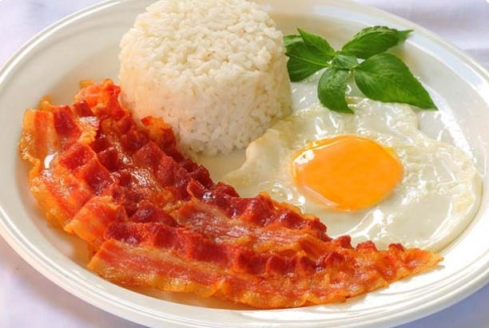
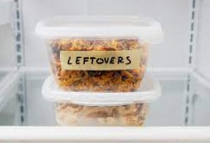
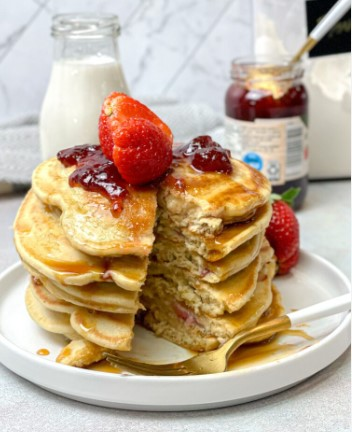
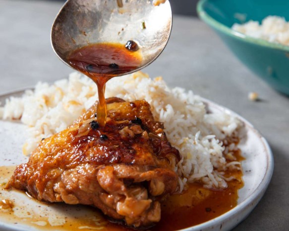
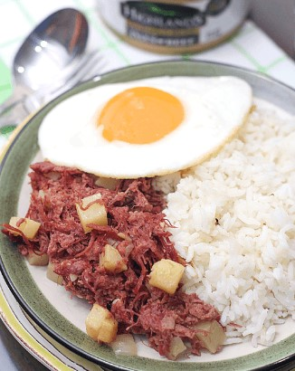
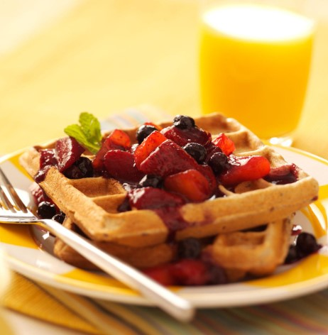
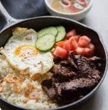
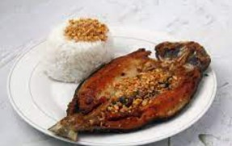

✨ZOEY'S MEAL PLANNER✨

✨ZOEY'S MEAL PLANNER✨ |
||||||
|---|---|---|---|---|---|---|
| DAYS📅 | BREAKFAST🍳 | LUNCH🍔 | DINNER🍷 | |||
| MONDAY |  | Bacon, Eggs, Rice, and Orange Juice | |
Sinigang and Rice |  | Leftovers |
| TUESDAY |  | Pancakes, Berries, and Milk |  | Adobo and Rice | Leftovers | |
| WEDNESDAY |  | Cornbeef, Eggs, Rice, and Milk | |
Sinigang and Rice | Leftovers | |
| THURSDAY |  | Waffles, Berries, and Orange Juice | Tinola and Rice | Leftovers | ||
| FRIDAY |  | Beef Tapa, Eggs, Rice and Orange Juice |  | Fried Bangus and Rice | Leftovers | |
E. Guevara. (2012, August 21). Bacon Egg. Pinteresthttps://www.pinterest.ph/pin/246431410831094245/
Foodie, H. (n.d.). PORK SINIGANG RICE POT. https://homefoodie.com.ph/recipe/pork-sinigang-rice-pot
Osmanski, S. (2022, November 22). How long do leftovers last in the fridge? Reader’s Digest. https://www.rd.com/article/how-long-can-leftovers-last-in-the-fridge
Lama. (2022, April 28). TasteGreatFoodie - Almond Milk Strawberry Pancakes (Dairy Free) -. TasteGreatFoodie. https://tastegreatfoodie.com/almond-milk-strawberry-pancakes/
Chicken adobo (Filipino-Style braised chicken) recipe. (2023, February 17). Serious Eats. https://www.seriouseats.com/filipino-style-chicken-adobo-recipe
Adarne, P. (2022). CornSiLog ( Corned Beef, Sinangag, Itlog) with Highlands Gold Corned Beef. The Peach Kitchen. https://www.thepeachkitchen.com/2014/08/cornsilog-highlands-gold-corned-beef/
Waffles with Peach-Berry Compote. (2022, October 16). Taste of Home. https://www.tasteofhome.com/recipes/waffles-with-peach-berry-compote/
Maggi. (n.d.). Chicken tinola. https://www.maggi.ph/recipes/chicken-tinola/
Cabrera, M. (2022). Filipino beef tapa tapsilog. The Little Epicurean. https://www.thelittleepicurean.com/filipino-beef-tapa-tapsilog/
Dreamstime. (n.d.). Fried Daing na Bangus with Garlic Fried Rice, Fried Egg, and Pickled Papaya Daing Silog. https://www.dreamstime.com/photos-images/fried-bangus.html